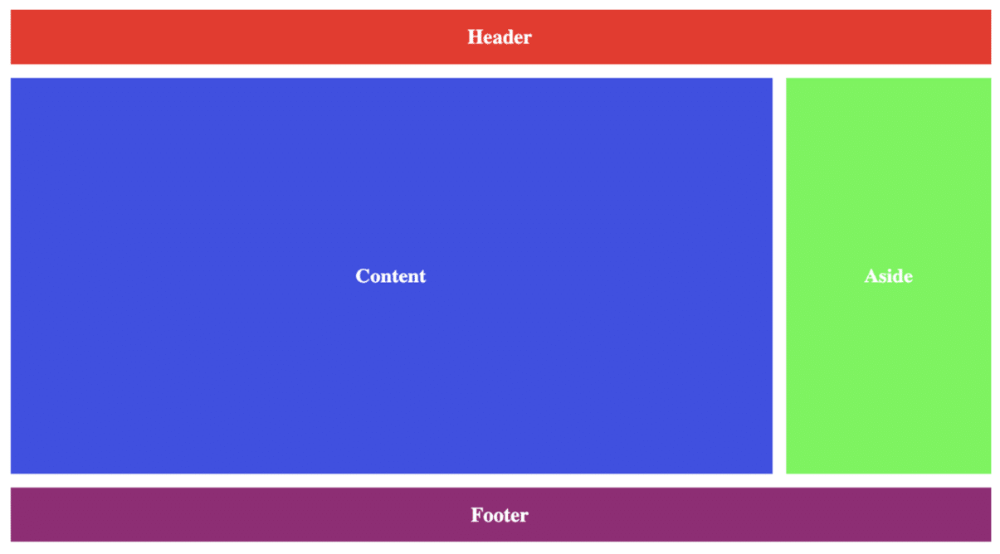

Dado as Letras A, C, F, J, identifique um padrão na sequência das letras de modo que a próxima letra será: A) M B) G C) P D) O E) Q
Dado 2 arrays a =[1,2,3,X, 8,9], b = [X, 6, 5, 4], crie uma função que receba o valor de X, por parâmetro e faça a soma dos elementos de cada array, descubra o valor de X de forma que o valor da soma do array a = 30, e o array b = 22. Obs: Você pode usar o console para exibir o resultado de cada Array.
Dado um array a que contém apenas números no intervalo de 1 até a.length, encontre o primeiro número duplicado para o qual a segunda ocorrência possui o índice mínimo. Em outras palavras, se houver mais de 1 número duplicado, retorne o número para o qual a segunda ocorrência possui um índice menor do que a segunda ocorrência do outro número. Se não houver tais elementos, retorne -1. Exemplo: Para a = [2, 1, 3, 5, 3, 2], a saída deve ser locateDuplicate (a) = 3. Existem 2 duplicatas: números 2 e 3. A segunda ocorrência de 3 tem um índice menor do que a segunda ocorrência de 2, portanto, a resposta é 3. Para a = [2, 4, 3, 5, 1], a saída deve ser locateDuplicate(a) = -1. Crie uma nova função chamada removeDuplicate que retorne um novo array sem duplicidade.
A empresa Zeos tecnologia, implementou um controle de versões para suas aplicações, essas aplicações rodam em versões do sistema operacional deferentes, o App snake, possuí 2 tipos de rederização: modo Gráfico e modo Textual. Para rodar no modo gráfico é preciso está com o sistema operacional 1.5.4.0 (a versão deve possuir 4 algarismos que representa o major, minor, patch e o build, abaixo dessa versão só é possível rodar o modo textual. Crie uma função compareVersion(versionA, versionB) que compare as versões do sistema operacional e verifique se o app snake deve rodar no modo textual ou no modo gráfico. • Se VersionA < strVersionB o resultado da função deve ser igual a -1. • Se VersionA > strVersionB o resultado da função deve ser igual a 1. • Se VersionA = strVersionB o resultado da função deve ser igual 0.
Crie uma tela com um <input> que deve receber o nome de um usuário no Github. Após digitar o nome do usuário e clicar no botão buscar a aplicação deve buscar pela API do Github (conformeURL abaixo) os dados de repositórios do usuário e mostrá-los em tela. URL: https://api.github.com/users/<seuUsuario>/repos Basta alterar "<seuUsuario>" pelo nome do usuário correto. Exiba na página uma lista com os nomes dos repositórios retornados na consulta. Caso aconteça algum erro na consulta (como usuário inexistente) exiba uma mensagem de erro em tela
A grande maioria dos sites hoje em dia segue um padrão de layout simples, contendo um cabeçalho(Header), um conteúdo (content) quem diz o respeito ao objeto daquele site, uma parte lateral (aside) onde são colocados anúncios e um rodapé (footer) contendo algumas informações daquela site.Precisamos criar um template genérico onde possamos usá-lo para servir de base para todos os nossos sites. Nosso analista de negócios já pensou no template desse e disponibilizou logo abaixo a imagem de como template genérico precisa ser, agora iremos precisa de você desenvolver o código-fonte usando apenas html e css. 
Uma empresa deseja contrata-lo para criar uma agenda telefônica. Eles querem armazenar essas informações em um banco não relacional (nesse exemplo será um arquivo db.json), onde a sintaxe dos dados estão em formado JSON. Eles esperam que esse gerenciador tenha as seguintes funcionalidades: • Inserir novo contato. • Alterar um contato existente. • Excluir um contato existente. • Consultar um contato pelo nome. Estrutura do banco de dados: bd.json
Corrigir os erros na função registerLinks. Um alerta deve exibir o índice baseado em zero da âncora dentro de um documento em vez de seguir o link. Por exemplo, no documento abaixo, o alerta deve exibir “2” quando a âncora do Google for clicada, pois é o terceiro elemento de âncora no documento e seu índice baseado em zero é 2.
Sua empresa atribui a cada cliente um ID de associação e você está implementando um dígito de verificação para esses IDs. O dígito de verificação deve ser calculado somando todos os dígitos em cada ID de associação. Se o resultado da soma for um número com mais de um dígito, outra interação é necessária e os dígitos do resultado também devem ser somados. Esse processo deve se repetir até que um número de um dígito seja calculado.Por exemplo, para o ID de associação “55555”, a soma de todos os dígitos é 25. Como esse não é um número de dígito único, 2 e 5 seriam adicionados e o resultado, 7, seria o dígito de verificação.
Maria e João precisa de um sistema que faça a classificação entre 2 jogadores, concedendo pontos em uma escala de para três categorias: clareza do problema, originalidade e dificuldade. Nós definimos a classificação para o desafio de Maria para ser (a[0], a[1], a[2]) e a classificação para o desafio de João ser (b[0], b[1], b[2]). Sua tarefa é encontrar seus pontos de comparação comparando a[0] com b[0], a[1] com b[1] e a[2] com b[2]. • Se a[i] > b[i] então Maria ganha ponto. • Se a[i] < b[i] então João ganha ponto. • Se a[i] = b[i] então nenhuma das pessoas recebe um ponto. Pontos de comparação é o total de pontos que uma pessoa ganhou. Dado a e b, determine seus respectivos pontos de comparação. Por exemplo, a= [1,2,3] e b= [3,2,1]. Para elementos 0, João é premiado com um ponto porque a[0] < b[0]. Para os elementos iguais a[1] e b[1], nenhum ponto é ganho. Finalmente, para elementos 2, a[2] > b[2] então Maria recebeum ponto. Seu array de retorno seria [1,1] com a pontuação de Maria primeiro e a segunda de João. Descrição da função Complete a função compareElements no editor de sua preferência. Ele deve retornar uma matriz de dois inteiros, sendo o primeiro a pontuação de Maria e o segundo a de João. compareElements tem o(s) seguinte(s) parâmetro(s): • a : uma matriz de números inteiros representando a classificação de desafio de Maria • b : uma matriz de inteiros representando a classificação de desafio de João. Formato de entrada A primeira linha contém 3 números inteiros separados por espaço, a[0], a[1] e a[2], descrevendo os respectivos valores em a. A segunda linha contém números inteiros separados por espaço, b[0], b[1] e b[2], descrevendo os respectivos valores em b. Formato de saída Retorna uma matriz de dois inteiros denotando os respectivos pontos de comparação ganhos por Maria e João. Entrada de Exemplo 1 a = 5 6 7 b = 3 6 10 Saída de Exemplo 1 1 1 Entrada de Exemplo 2 a= 17 28 30 b= 99 16 8Saída de Exemplo 2 2 1